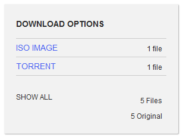
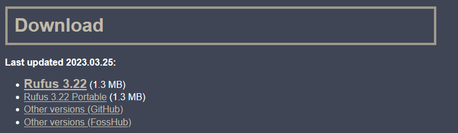
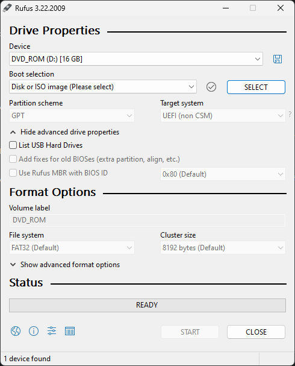
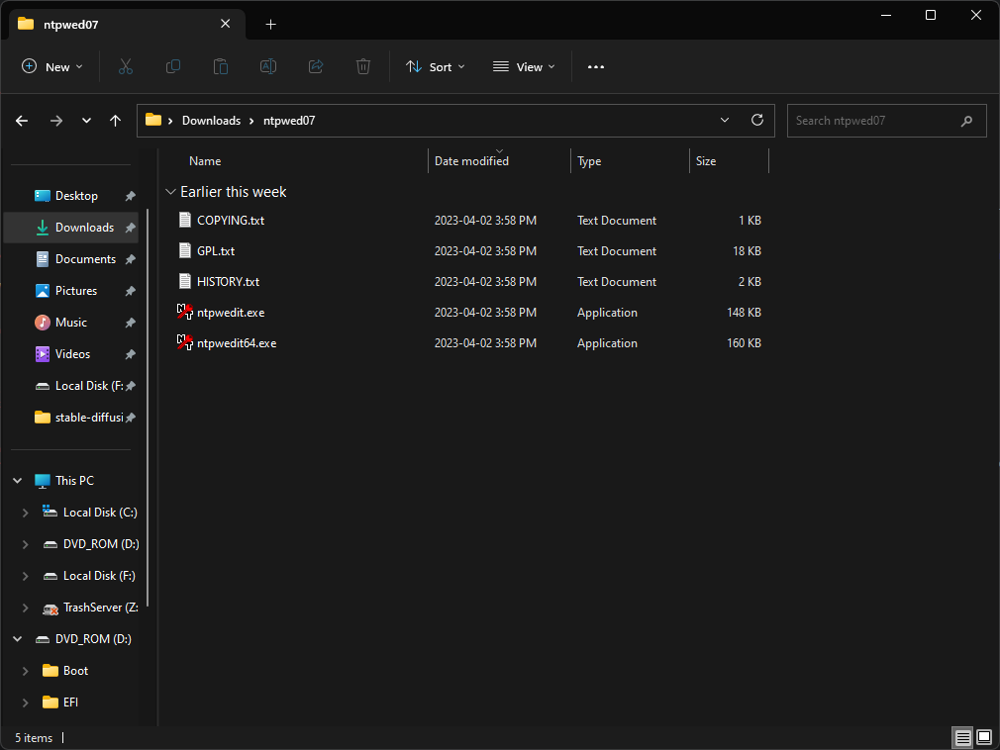
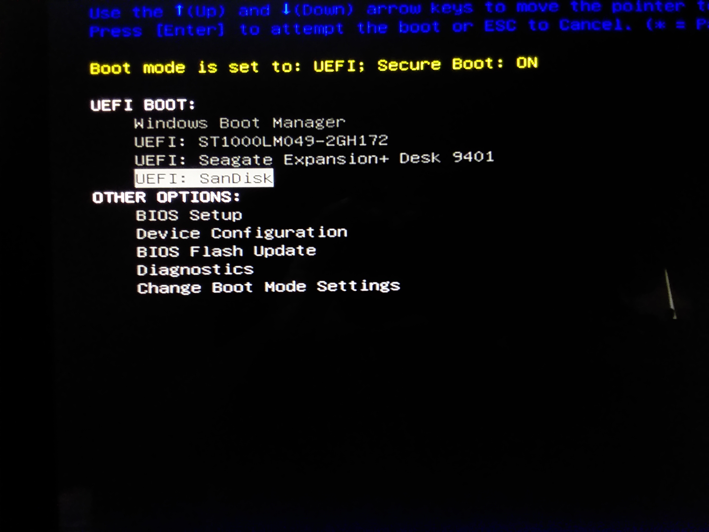
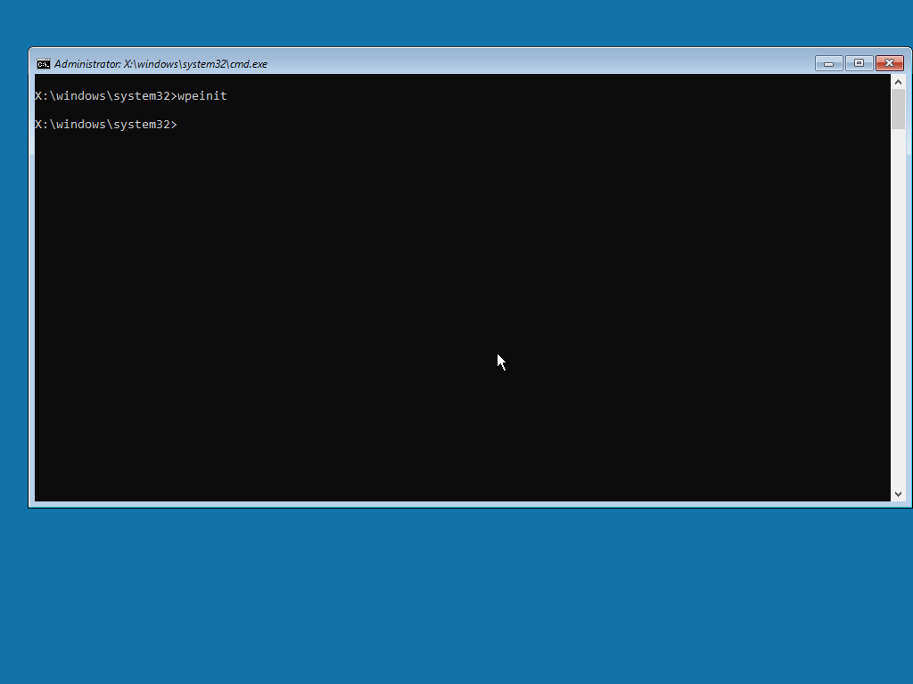
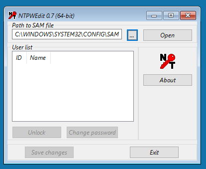
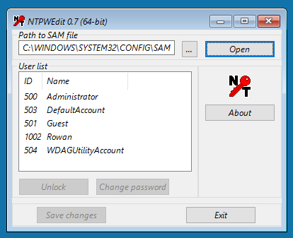
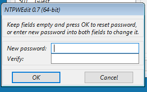

Download a Windows 10 Pre-Installation Environment, you can do so here, under "DOWNLOAD OPTIONS" you should see "ISO IMAGE", click that and it will start downloading.
I'm gonna assume you've downloaded the file already, if you're using a USB stick you'll want to use Rufus, if you're using CDs or DVDs you'll want to use a disc burning tool.
If you're using Rufus, go to the above link and scroll down until you see "Downloads", then click "Rufus 3.22".
AOnce you have everything downloaded, install Rufus by going to whatever folder it was download in, and then double-clicking the file, it should pop-up in a few seconds and look like this
At the top you'll see a menu, it should have your USB device listed alongside its drive letter, this doesn't need to be touched unless you have multiple USB sticks attached to your computer.
Below that is another menu and a button, the button should say "SELECT" on it, click this and find the ISO file you download in the previous step.
There are other things you can change however I highly recommend just leaving it unless you know what you're doing.
Finally, once everything is set, click "START" at the bottom and wait for it to finish. You'll get a big message box with options in it, just click OK
Since you're reading this we're gonna assume that you've already done the previous steps.
Now that you probably have a bootable drive, we're gonna have to add some tools, one I recommend is NTPWEdit for changing passwords.
Download NTPWEdit from here, scroll down and click "ntpwedit.zip". Open your USB drive in Windows Explorer and have it ready for later. Once NTPWEdit is finished downloading, open the ZIP file and copy the contents onto the USB drive.
Should be obvious, but first of all, plug in the USB stick.
Depending on your machine, they key required to enter the UEFI boot menu may be different, for Acer and Dell it's F12, while ASUS and some others don't even have one, you will have to look things up.
Once you are in, it should look something like this.
Under "UEFI BOOT" or similar, you should see the name of the manufacturer of your USB stick, use the arrow keys to navigate to that and press enter.
You should see a message that says "Press any key to boot from USB" on the screen, smash any key you can NOW.
Once that is done, you should see a Windows logo on the screen, with some spinny dots under it.
Don't be scared, there really isn't a lot to mess up here. Once you have gained confidence in yourself, type "ntpwedit64.exe" into the commannd prompt (the big black thing you're looking at on the screen). After you have done that, a window should appear.
If you see this window, click "Open", then it should populate with a bunch of things.
Administrator, DefaultAccount, Guest, and WDAGUtilityAccount are all system accounts and should not be touched under any circumstances. Click on your username and click "Change password", a window should appear with instructions more clear than I could ever hope to write. Follow the instructions on the window.
Once you are done with that, close the window, and type "wpeutil reboot" into the command prompt (This will restart the computer). After the screen goes blank, take out the USB and you should be back in like normal.